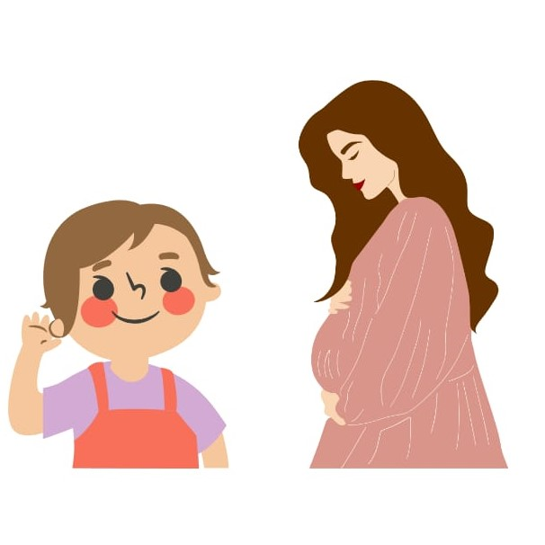

Target Pemerintah 2023 : Turunkan Angka Stunting Jadi 17%


AR (Augmented Reality)
Gambar Marker 1
Menurut WHO (2015), stunting adalah gangguan pertumbuhan dan perkembangan anak akibat kekurangan gizi kronis dan infeksi berulang, yang ditandai dengan panjang atau tinggi badannya berada di bawah standar. Sehingga stunting adalah gangguan pertumbuhan dikarenakan kurangnya kebutuhan gizi yang cukup. Apabila seorang anak memiliki tinggi badan lebih dari -2 standar deviasi median pertumbuhan anak yang telah ditetapkan oleh WHO, maka ia dikatakan mengalami stunting.
Adapun ciri-ciri stunting, yakni antara lain sebagai berikut:
Ada beberapa faktor penyebab stunting yang perlu Anda Ketahui :
1. Kurang gizi dalam waktu lama
2. Sanitasi yang buruk dan keterbatasan akses pada air bersih
3. Pola asuh yang kurang efektif
4. Tidak melakukan perawatan pasca melahirkan
5. Rendahnya akses terhadap pelayanan kesehatan
Dampak Stunting jangka pendek:
Perkembangan kognitif dan motorik pada anak tidak optimal.
Sistem kekebalan tubuh yang lemah.
Rendahnya nilai Intelligence Quotients (IQ) anak, yaitu 5-10 poin lebih rendah dari anak normal.
Dampak Stunting jangka panjang:
Postur tubuh yang lebih pendek dibandingkan pada umumnya.
Menurunkan konsentrasi dan kesulitan memahami materi pembelajaran yang berpengaruh terhadap prestasi belajar anak.
Produktivitas dan kapasitas kerja rendah.
Meningkatnya risiko obesitas dan penyakit lainnya.
Berikut beberapa cara yang bisa dilakukan untuk mencegah stunting:
1. Mencukupi asupan gizi sejak pembuahan sel telur hingga anak berusia 2 tahun
2. Memberikan ASI eksklusif hingga bayi berumur 6 bulan
3. Mengusahakan anak mendapatkan imunisasi lengkap
4. Memberikan MPASI yang begizi dan kaya protein hewani untuk bayi yang berusia diatas 6
bulan
5. Memantau perkembangan anak dan membawa ke posyandu secara berkala
Cara
yang bisa
dilakukan untuk memperbaiki kondisi stunting salah satunya adalah dengan cara
pengaturan pola gizi (Isi Piringku), yaitu makan bukan hanya sekadar kenyang
namun harus diperhatikan nutrisinya.
Porsi Isi Piringku terdiri dari makanan pokok yakni sumber kabohidrat dengan
porsi 2/3 dari 1/2 piring. Lalu dilengkapi dengan lauk pauk dengan porsi 1/3
dari 1/2 piring.
Untuk setengah piring lainnya diisi dengan proporsi sayur-sayuran dengan porsi
2/3 dan buah-buahan dengan porsi 1/3. Selain itu, lakukan berbagai aktivitas
untuk stimulasi tumbuh kembang dan kecerdasan sosial emosionalnya, juga penuhi
kebutuhan kasih sayangnya.